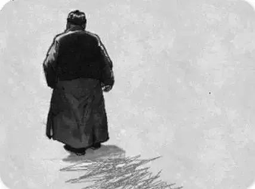

原文
主要内容：
我与父亲不相见已二年余了，我最不能忘记的是他的背影。
那年冬天，祖母死了，父亲的差使1也交卸了，正是祸不单行的日子。我从北京到徐州，打算跟着父亲奔丧2回家。到徐州见着父亲，看见满院狼藉3的东西，又想起祖母，不禁簌簌地流下眼泪。父亲说：“事已如此，不必难过，好在天无绝人之路！”
回家变卖典质4，父亲还了亏空；又借钱办了丧事。这些日子，家中光景很是惨澹5，一半为了丧事，一半为了父亲赋闲6。丧事完毕，父亲要到南京谋事，我也要回北京念书，我们便同行。
那年冬天，祖母死了，父亲的差使1也交卸了，正是祸不单行的日子。我从北京到徐州，打算跟着父亲奔丧2回家。到徐州见着父亲，看见满院狼藉3的东西，又想起祖母，不禁簌簌地流下眼泪。父亲说：“事已如此，不必难过，好在天无绝人之路！”
回家变卖典质4，父亲还了亏空；又借钱办了丧事。这些日子，家中光景很是惨澹5，一半为了丧事，一半为了父亲赋闲6。丧事完毕，父亲要到南京谋事，我也要回北京念书，我们便同行。
词语注释：
差（chāi）使：旧时官场中称临时委任的职务，后来泛指职务或官职。
奔丧：在外闻亲人去世而归。
狼藉（jí）：散乱不整齐的样子。亦作“狼籍”。
典质：典当，抵押。
奔丧：在外闻亲人去世而归。
狼藉（jí）：散乱不整齐的样子。亦作“狼籍”。
典质：典当，抵押。
创作背景
1917年，作者的祖母去世，父亲任徐州烟酒公卖局局长的差事也交卸了。办完丧事，父子同到南京，父亲送作者上火车北去，那年作者20岁。在那特定的场合下，做为父亲对儿子的关怀、体贴、爱护，使儿子极为感动，这印象经久不忘，并且几年之后，想起那背影，父亲的影子出现在“晶莹的泪光中”，使人不能忘怀。1925年，作者有感于世事，便写了此文。
文学鉴赏
内容赏析
交代人物，叙述跟父亲奔丧回家的有关情节，为描写父亲的背影作好铺垫。文章开头一句，落笔点题。“二年余”表明“我”清楚地记得和父亲分离的日子。副词“已”体现出“二年余”在作者的心目中已相当漫长，想望之情，不言而喻。两年多的分离，“我”对父亲的思念是多方面的。其中“最不能忘记的是他的背影”，点出题目。接着，转入对“那年冬天”往事的追述。“祖母死了，父亲的差使也交卸了”，短短两句呈现出人事错迁、谋生艰难之感。“我”从北京到了父亲的住地以后，“看见满院狼藉的东西”，其潦倒之状，又使“我不禁簌簌地流下眼泪”。因为“祸不单行”，所以回家之后，靠“变卖典质”，才还了“亏空”，又“借钱办了丧事”。这里所用的“祸不单行”、“亏空”，“借钱”、“丧事”等词语，一方面是当时情况的真实写照，同时也使后面“家中光景很是惨澹”的形容更有着落。这些叙述和描写，生动地反映了当时世态的灰暗。毛泽东主席在《中国社会各阶级的分析》一文中，曾对当时小资产阶级左翼的情况做过分析，说：“这种人因为他们过去过着好日子，后来逐年下降，负债渐多，渐次过着凄凉的日子，瞻念前途，不寒而栗”。这篇散文所叙述的情节，所抒发的感情，具有一定的典型意义的，也是此文为之感动共鸣的重要原因。
语言特色
这篇散文的语言非常忠实朴素，又非常典雅文质。这种高度民族化的语言，和文章所表现的民族的精神气质，和文章的完美结构，恰成和谐的统一。没有《背影》语言的简洁明丽、古朴质实，就没有《背影》的一切风采。《背影》的语言还有文白夹杂的特点。例如不说“失业”，而说“赋闲”，最后一节因父亲来信是文言，引用原句，更见真实，也表达了家庭、父亲的困境和苍凉的心情与复杂的感受，同时，文白夹杂的语句，也笼上了一层时代赋予小资产阶级知识分子的特殊语言色彩。
写作特色
这篇散文写作上的主要特点是白描。全文集中描写的，是父亲在特定场合下使作者极为感动的那一个背影。作者写了当时父亲的体态、穿着打扮，更主要地写了买橘子时穿过铁路的情形。并不借助于什么修饰、陪衬之类，只把当时的情景再现于眼前。这种白描的文字，读起来清淡质朴，却情真味浓，蕴藏着一段深情。所谓于平淡中见神奇。其次，作品还运用了侧面烘托的手法。如写儿子“看见他的背影”，“泪很快地流下来了”。又写父亲买桔子回来时，儿子“赶紧去搀他”。这些侧面烘托手法的运用，更加反衬出父亲爱子的动人力量。
行文立意
这篇散文的特点是抓住人物形象的特征“背影”命题立意，在叙事中抒发父子深情。“背影”在文章中出现了四次，每次的情况有所不同，而思想感情却是一脉相承。第一次开篇点题“背影”，有一种浓厚的感情气氛笼罩全文。第二次车站送别，作者对父亲的“背影”做了具体的描绘。第三次是父亲和儿子告别后，儿子眼望着父亲的“背影”在人群中消逝，离情别绪，催人泪下。第四次在文章的结尾，儿子读着父亲的来信，在泪光中再次浮现了父亲的“背影”，思念之情不能自已，与文章开头呼应，把父子之间的真挚感情表现得淋漓尽致。
猜你喜欢